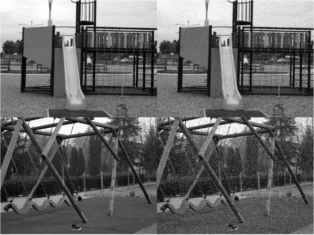
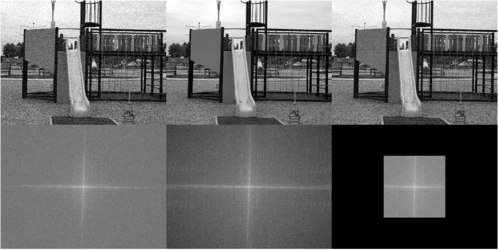
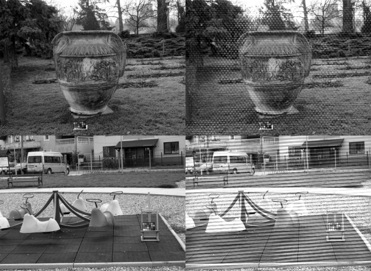
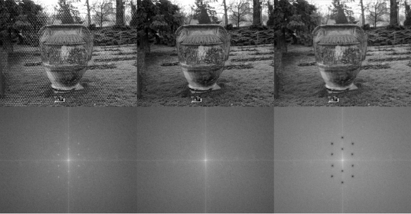

1. 掌握Matlab的关于二维离散傅里叶变换(Fast Fourier Transform, FFT)的相关函数使用方法，能够将一张二维图像从空间域转换到频率域、观察并分析其傅里叶谱、构造适用的滤波函数完成图像去噪任务。
2. 熟悉陷波滤波器(Notch Filter)函数的构造方法，能够实现对傅里叶谱进行局部点位滤波。
3. 熟悉低通滤波器的构造方法，实现滤除傅里叶谱的高频部分。
使用二维傅里叶变换将噪声图像转换到频率域，观察、分析其傅里叶谱，构造适当滤波函数对傅里叶谱进行滤波，再通过傅里叶逆变换将图像从频率域恢复到空间域，实现图像去噪。
与第一次上机课不同，本实验为节省实验时间，仅在单通道的灰度图像进行。在计算图像客观质量评价指标时，请先将输入图像的取值范围调整至。
（一）基于低通滤波器傅里叶变换的灰度图像去噪任务
本实验仅在2种数据图像进行，如图1所示，给定2种有噪(Noisy)、无噪(Ground Truth)图像对。
其中，在NH09上的实验过程已经作为范例给出，图像去噪结果及其中心化对数傅里叶谱如图2所示，客观质量评价指标如表1所示。使用低通滤波器进行去噪。最终，去噪结果如图2(c)所示。
现要求完成以下任务：
1. 使用傅里叶变换将原图像转换到频率域，设计低通滤波器函数，完成NH15图像在频率域的去噪实验，并展示去噪前后的图像及其中心化对数傅里叶谱，排版格式可参考图2；同时，计算客观图像质量评价指标RMSE、PSNR、SSIM，并补全表1。
NH09 |  |
NH15 |
图1 用于低通滤波去噪实验的图像。第一列表示原图像，第二列表示噪声图像。

(a) | (b) | (c) |
图2 图像及其中心化对数傅里叶谱。（a）噪声图像；(b)原图像；(c)去噪图像。
表1 图像去噪前（Original列）、去噪后（FFT列）的客观质量评价指标结果
Data | Metric | Original | FFT |
NH09 | RMSE↓ | 23.92 | 16.67 |
PSNR↑ | 20.55 | 23.69 | |
SSIM↑ | 0.429 | 0.585 | |
NH15 | RMSE↓ | ||
PSNR↑ | |||
SSIM↑ |
注：与上一实验不同，本实验不需要将图像长宽进行缩放。计算指标前，
请先将输入变量的数值范围调整到[0,255]。
（二）基于陷波滤波器傅里叶变换的灰度图像去噪任务
本实验仅在2种数据图像进行，如图3所示，给定2种有噪(Noisy)、无噪(Ground Truth)图像对。
NH47 |  |
NH06 |
图3 本实验用到的图像数据。第一列表示原图像，第二列表示噪声图像。
 | ||
(a) | (b) | (c) |
图4 图像及其中心化对数傅里叶谱。（a）噪声图像；(b)原图像；(c)去噪图像。
其中，在NH47上的实验过程已经作为范例给出，图像去噪结果及其中心化对数傅里叶谱如图4所示，客观质量评价指标如表2所示。图4(a)下图中，亮点表示图像噪声，宜使用陷波滤波器进行去噪。最终，通过陷波滤波器在频率域对这些亮点进行滤除，结果如图4(c)上图所示，成功实现图像去噪。
在构造陷波滤波器函数时，只须关注四个象限中的不互相对称的象限即可，如第一象限和第二象限，或第二象限和第三象限。本实验给出的陷波滤波器函数已具备对称性，例如，对第一象限的点位进行滤波时，也会自动对第三象限的对称点进行滤波。因此，在构造陷波滤波器函数对两个互相对称的点位进行滤波时，只须输入两点中的其中一点的坐标即可。
现要求完成以下任务：
1. 完成在NH06图像的去噪实验，并展示去噪前后的图像及其中心化对数傅里叶谱，排版格式可参考图4；同时，计算客观图像质量评价指标RMSE、PSNR、SSIM，并补全表2。请注意，该任务的实验代码主体部分已给出，同学们只须找到需要滤波的点位坐标，把这些坐标输入到陷波滤波器函数中即可，无须再编写代码。
表2 图像去噪前（Original列）、去噪后（FFT列）的客观质量评价指标结果
Data | Metric | Original | FFT |
NH47 | RMSE↓ | 17.55 | 11.39 |
PSNR↑ | 23.24 | 27.00 | |
SSIM↑ | 0.808 | 0.937 | |
NH06 | RMSE↓ | ||
PSNR↑ | |||
SSIM↑ |
注：与上一实验不同，本实验不需要将图像长宽进行缩放。计算指标前，
请先将输入变量的数值范围调整到[0,255]。
1.在使用陷波滤波器对傅里叶谱进行编辑前，请先将傅里叶谱居中;
2.本实验给出了交互式获取图像坐标的函数，以供同学们获取构建陷波滤波器所需的图像坐标。同学们只须执行该函数，然后在图像中点击鼠标左键，即可在命令行窗口返回该图像点击区域的坐标。请注意，该函数返回的坐标是经过坐标系中心化变换的，即，该坐标系的零点并非位于图像左上角，而是位于图像中心。这意味着通过该函数获取的坐标（有正值有负值）可直接输入至陷波滤波器函数中;
3.在正式实验开始前，建议先复现本文给出的NH9和NH47图像的客观评价质量指标及其去噪图像，以此为依据来判断自身编程是否正确。由于每个人获取的坐标位置存在偏差，最终计算出的客观评价质量指标也会与本实验范例给出的结果存在偏差，只须接近即可；
4.计算RMSE、PSNR和SSIM时，请先将输入图像取值范围调整至；
5.可以通过“help 函数”指令调阅该函数的官方文档，从而学习如何使用该函数。例如在命令行窗口键入：
>>>help psnr
即可调阅psnr()函数的官方文档；
6.常用函数如下表所示：
表2 常数函数及其功能
函数 | 简介 | |||
imread() | 读取图像 | |||
imshow() | 显示图像 | |||
fft2() | 二维图像离散傅里叶变换 | |||
abs() | 求绝对值，在本实验可用来求傅里叶谱 | |||
fftshift() | 将零频分量移到频谱中心 | |||
log() | 对输入矩阵逐元素求对数 | |||
mouse_track() | 调用后，左键点击图像读取点位坐标（图像中心是坐标系原点） | |||
notch_filter() | 陷波滤波器函数 | |||
ifftshift() | 恢复傅里叶谱坐标系到原始位置 | |||
real() | 取复数的实部 | |||
rmse() | 计算输入图像对的均方误差 | |||
psnr() | 计算输入图像对的峰值信噪比 | |||
ssim() | 计算输入图像对的结构相似度 | |||
报告需要写上班级，姓名，学号，下周三下午5月21号六点前提交。
提交链接：https://send2me.cn/yu_vP5Bm/RS-XImhc9mV49g。
姓名： | 班级： | 学号： |
（一）基于低通滤波器傅里叶变换的灰度图像去噪任务
任务： 使用傅里叶变换将空间域原图像转换到频率域，设计低通滤波器函数，完成在NH15图像的去噪实验，并展示去噪前后的图像及其中心化对数傅里叶谱，排版格式可参考实验书正文图2；同时，计算客观图像质量评价指标RMSE、PSNR、SSIM，并补全表1。
(a) | (b) | (c) |
图1 图像及其中心化对数傅里叶谱。（a）噪声图像；(b)原图像；(c)去噪图像。
表1 图像去噪前、后的客观质量评价指标结果
Data | Metric | Original | FFT |
NH09 | RMSE↓ | 23.92 | 16.67 |
PSNR↑ | 20.55 | 23.69 | |
SSIM↑ | 0.429 | 0.585 | |
NH15 | RMSE↓ | ||
PSNR↑ | |||
SSIM↑ |
注：与上一实验不同，本实验不需要将图像长宽进行缩放。计算指标前，
请先将输入变量的数值范围调整到[0,255]。
（二）基于陷波滤波器傅里叶变换的灰度图像去噪任务
任务：完成在NH06图像的去噪实验，并展示去噪前后的图像及其中心化对数傅里叶谱，排版格式可参考实验书正文图4；同时，计算客观图像质量评价指标RMSE、PSNR、SSIM，并补全表2。
(a) | (b) | (c) |
图1 图像及其中心化对数傅里叶谱。（a）噪声图像；(b)原图像；(c)去噪图像。
表2 图像去噪前、后的客观质量评价指标结果
Data | Metric | Original | FFT |
NH47 | RMSE↓ | 17.55 | 11.39 |
PSNR↑ | 23.24 | 27.00 | |
SSIM↑ | 0.808 | 0.937 | |
NH06 | RMSE↓ | ||
PSNR↑ | |||
SSIM↑ |
注：与上一实验不同，本实验不需要将图像长宽进行缩放。计算指标前，
请先将输入变量的数值范围调整到[0,255]。